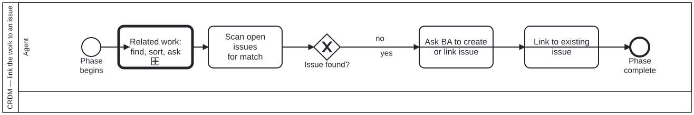

Generated from
cat-harness/processes/process/crdm-issue-linking.bpmnbygen-processes-viz.ts— do not edit here. All processes
Process_CRDM_Issue · strict · 4 step(s)
Scan for a GitHub issue matching the feature work, then link it or ask — an issue is never created without the BA’s permission. Feature work must be linked to a GitHub issue. First find the related work (beans, issues, open PRs) and ask whether to coordinate; then scan before creating, and never create one without the BA’s permission — an issue is the stakeholder’s record, not the agent’s scratchpad.

| lane | role | what it does here |
|---|---|---|
| Agent | authoring-agent |
The only CRDM sub-diagram in this slice where the BA has no lane of its own: A_AskCreate is still an Agent-lane activity, so the permission this process exists to enforce is obtained out of band rather than modelled as a cross-lane handoff, unlike crdm-requirements-definition.bpmn and crdm-close.bpmn elsewhere in the same methodology. |
Every one of the 4 step(s) is documented.
| step | lane | skill / sub-process | what it does |
|---|---|---|---|
Related work: find, sort, askCall_RelatedWork |
Agent | calls Related work: find, sort, summarize, ask to coordinate | When the requirement is initiated or updated through a human-agent chat, search the beans and the repository’s issues and open PRs for relevance, categorize and summarize them, and ask the user whether and how to coordinate. Judgement decides the categories; the user decides the coordination. Owner, 2026-09-23 (issue #1023). |
Scan open issues for matchA_ScanIssues |
Agent | crdm-requirements-workflow |
Search open issues, then recently closed ones, by title and body keywords for one this request belongs to. Requirements may span several issues; note every relevant one. |
Ask BA to create or link issueA_AskCreate |
Agent | crdm-requirements-workflow |
Ask — never create. Creating an issue without the BA’s permission is the thing this step exists to prevent. |
Link to existing issueA_LinkIssue |
Agent | crdm-requirements-workflow |
A match was found: ask the person whether the requirements go on #NNN, then link the work there. The issue is where stakeholders sign off, so no phase proceeds without one. |
Every one of the 1 decision(s) is documented.
| decision | what decides it | branches |
|---|---|---|
Issue found?GW_Issue |
Answered by the scan of open issues: does one already cover this work? yes links to it; no asks the BA to create or name one. The agent does not create an issue on its own. |
no → Ask BA to create or link issue yes → Link to existing issue |